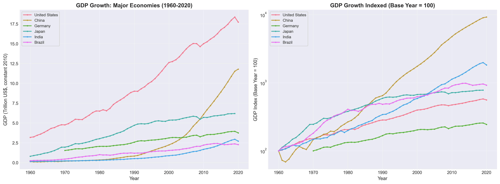

Team Information
Project Title
"Echoes of History: An Interactive Exploration of Human Development (1960-2020)"
Dataset
📊 World Bank Data by Indicators (1960-2020)
Source: https://github.com/light-and-salt/World-Bank-Data-by-Indicators
Description: Pre-cleaned World Bank data tracking 250+ countries across 20 development indicators (climate change, economy, education, health, infrastructure, poverty, etc.) from 1960-2020
Size: Each indicator file contains 10,000+ rows and 50+ columns
Type: Real-world data (not synthetic)
Why This Dataset?
This dataset is uniquely positioned for an explorable explanation because it spans 60 years of global development during pivotal historical moments—the Cold War, China's economic reforms, the digital revolution, and the 2008 financial crisis. With 20 interconnected indicators across 250+ countries, we can create interactive narratives showing how major events rippled through nations, affecting everything from life expectancy to carbon emissions. The comprehensive coverage allows us to contrast different developmental trajectories and reveal patterns invisible when examining single indicators or countries in isolation.
Project Description
We will create an interactive web-based explorable explanation that transforms 60 years of global development data into an engaging narrative experience. Users will explore through three main modes: (1) a Timeline Navigator for scrubbing through decades while watching animated global changes with historical event annotations; (2) Country Deep Dives where users select any nation to see its development story across all 20 indicators with contextual explanations; and (3) Cross-National Pattern Analysis enabling comparisons of how different regions responded to shared challenges.
The experience will emphasize visual storytelling through smooth transitions, linked views, and responsive animations, revealing human stories like how the Green Revolution transformed poverty in Asia, how digital infrastructure created new divides, and how environmental policies shaped our climate crisis. We'll build the visualization using D3.js for custom interactivity, Scrollama.js for scroll-driven storytelling, and deploy as a responsive, publicly accessible webpage.
Static Visualizations
📈 Visualization 1: Economic Growth Trends (1960-2020)
🏥 Visualization 2: Health Indicator Evolution by Region

📚 Visualization 3: Education & Demographics Trends